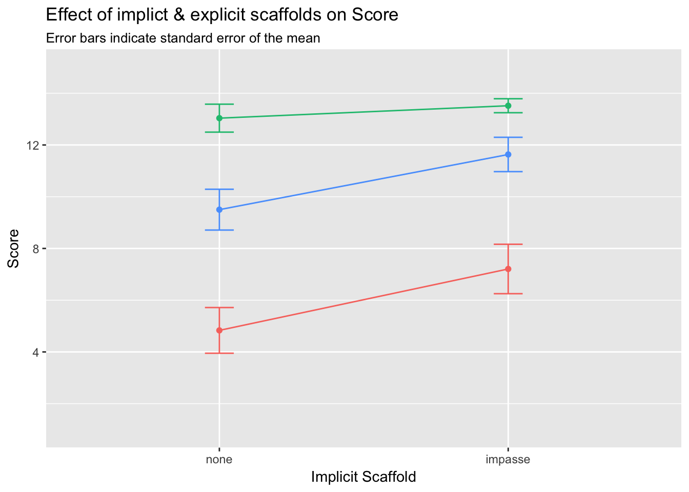

Study 3
Comparing Explicit and Implicit Scaffolding
Introduction
The purpose of this study is to compare the relative efficacy of explicit (ie. visually-salient text or images that serve instructional purpose) and implicit (ie. task and question structure) scaffolding for an unconventional statistical graph. We hypothesize that implicit techniques—specifically presenting a task that forms a mental impasse for the reader—will be more supportive of correct graph interpretation than explicit graph-reading instructions. We base this hypothesis on prior observation and experimental work (Fox & Hollan, in preparation) which revealed that when presented with an unconventional graph with structural elements (ie. axes and grid) that resembled conventional graphs, learners did not always realize they did not understand how the graph was meant to be read. We propose that prior knoweldge of conventional graph systems acts as a form of “graphical fixedness”, that learners must overcome to form correct mental models for new representational systems.
IN PROGRESS DATA COLLECTION TOTALS
| EXPLICIT | ||||
|---|---|---|---|---|
| IMPASSE | none | text/image | interactive | All |
| none | 7 | 7 | 7 | 21 |
| impasse | 5 | 10 | 9 | 24 |
| All | 12 | 17 | 16 | 45 |
Methods
Design
We utilized a 3 (explicit scaffold: none, text/image, interactive) X 2 (implicit scaffold: none, impasse) between-subjects factorial design, with response time and score (max = 15) as dependent variables.
Participants
45 students (69 % female) registered as STEM majors at a public university in the United States participated in exchange for course credit (age: 18 - 27 years).
Measures
Response Accuracy
The mean score across the entire sample was approximately 10 points (out of 15), with a standard deviation of 0.72 , and values ranging from 1 to 15 points.

A Shapiro-Wilk test for normality yielded a value of 0.826044, p = 9.3627422\times 10^{-6} suggesting that the distibution is significantly non-normal.


Response Latency
The mean total runtime across the sample was approximately 8 minutes, with a standard deviation of 0.32 minutes, and values ranging from 4 to 13 minutes.

A Shapiro-Wilk test for normality yielded a value of 0.9594223, p = 0.1161062 suggesting that the data are from a normally-distributed population.


Results
Response Accuracy
| EXPLICIT Scaffold | ||||||
|---|---|---|---|---|---|---|
| none | text/image | interactive | ||||
| IMPASSE | mean | sd | mean | sd | mean | sd |
| none | 4.1 | 4.9 | 7.0 | 4.2 | 12.3 | 3.2 |
| impasse | 8.8 | 4.9 | 12.6 | 3.1 | 13.7 | 1.2 |
## Anova Table (Type II tests)
##
## Response: triangular_score
## Sum Sq Df F value Pr(>F)
## explicit 277.98 1 21.7970 3.233e-05 ***
## impasse 165.62 1 12.9870 0.000841 ***
## explicit:impasse 22.35 1 1.7523 0.192923
## Residuals 522.87 41
## ---
## Signif. codes: 0 '***' 0.001 '**' 0.01 '*' 0.05 '.' 0.1 ' ' 1

Response Time
| EXPLICIT Scaffold | ||||||
|---|---|---|---|---|---|---|
| none | text/image | interactive | ||||
| IMPASSE | mean | sd | mean | sd | mean | sd |
| none | 8.59 | 3.14 | 8.13 | 2.55 | 9.24 | 2.86 |
| impasse | 8.95 | 1.93 | 7.23 | 1.18 | 7.37 | 0.96 |
## Anova Table (Type II tests)
##
## Response: tt_min
## Sum Sq Df F value Pr(>F)
## explicit 0.708 1 0.1531 0.6976
## impasse 10.718 1 2.3174 0.1356
## explicit:impasse 6.777 1 1.4653 0.2330
## Residuals 189.622 41
 ```
Copyright © 2017 Amy Rae Fox. All rights reserved.